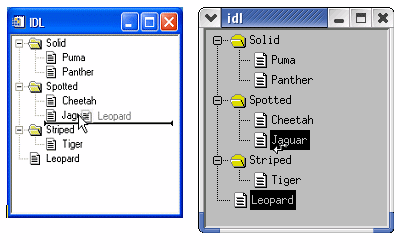
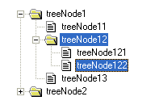

In IDL versions 6.3 and later, you can create applications that allow users to drag tree nodes within a single tree widget, between tree widgets, or from a tree widget to a draw widget. Depending on the circumstances, the dragged tree node is either copied to the new location (leaving the source node intact) or moved to the new location (removing the source node). IDL provides a variety of controls that allow you to define the exact behavior of the application when a user drags and drops tree nodes.
This section discusses the following topics:
To the user of an IDL program that supports drag and drop functionality, the activity of dragging and dropping conforms to platform guidelines. The user selects one or more nodes using the left mouse button and drags them while holding the mouse button down. When dragging a node, the cursor indicates where the drop is allowed (above, on, below) or not allowed. Optionally, the cursor can include a + symbol to indicate the different between copy and move operations.
Note: On Windows platforms, the cursor shows an opaque copy of the node under the mouse pointer, but does not show all selected nodes, even though they are selected and are dragged. On UNIX platforms, a cursor reflecting the active drag is all that is shown.
In addition to the default platform-specific drag and drop behavior, IDL tree widgets implement the following:
As the user drags the selected nodes, the drag and drop cursor changes to indicate whether a drop is allowed at the current position. The drag and drop cursor is displayed differently on different platforms:
|
Node
|
Windows |
UNIX |
|
Above |
Horizontal line above target node |
Arrow bent and pointed up |
|
On |
Target node highlighted |
Straight arrow |
|
Below |
Horizontal line below target node |
Arrow bent and pointed down |
|
Not Allowed |
Circle with slash through |
Circle with slash through |
The following figure shows the appearance of the drag and drop cursor when inserting a node (here named Leopard ) after a node named Jaguar , but within the node category Spotted .
|
 |
Note: The IDL application ultimately controls which nodes to copy or move, where they are placed, and the destination tree’s final state. For example, IDL may override the restoration of a previous selection and instead select newly copied nodes.
Drag and drop functio nality is not enabled by default. When creating an IDL application that incorporates a tree widget, you can enable drag and drop behavior to copy, move, or otherwise rearrange tree widget nodes. This section discusses the steps necessary to implement drag and drop functionality in your application.
Implementing drag and drop functionality in your tree widget application entails three steps:
Drag and drop-related properties of a tree widget node (the values of the DRAG_NOTIFY, DRAGGABLE, and DROP_EVENTS keywords) are inheritable. This means that unless the value of one of these keywords is set specifically for a given tree node, that node will inherit the value of its parent. This means that if you set these values on the root node of a tree, but not on any child node, all nodes will have the values specified for the root node.
Inheritance is dynamic. This means that if the value of one of the inherited properties changes after the tree widget has been created (via a change of parent, due to a drag and drop operation, or via a call to WIDGET_CONTROL), the values for all of the inheriting nodes will change as well. One advantage of this type of inheritance is that nodes don’t keep track of their own property settings as they are copied and moved. This allows you to create, for example, a folder that allows items to be dropped in, but not dragged out, simply by setting properties on the folder.
The drag and drop-related properties can all be queried using the WIDGET_INFO function.
The value of the DRAGGABLE property of a tree widget node (as set via the DRAGGABLE keyword to WIDGET_TREE or the SET_DRAGGABLE keyword to WIDGET_CONTROL ) determines whether or not it can be used to initiate drag and drop operations.
Note: The value of a tree node’s draggability is independent of its dropability. Making a node draggable does make it droppable, but it is possible to have no allowable place to drop it. See Responding to Drag Notifications (Callbacks) for information on allowing users to drop nodes.
If a tree widget allows multiple selection (if the MULTIPLE keyword was set on the root node of the tree), it is possible that a user could select a mixture of draggable and non-draggable nodes. If the user attempts to drag this mixed selection by moving a draggable node, your IDL application will have to determine whether to allow a drop. You have several possible options to respond to this situation:
When the user drags a group of selected nodes over another node, IDL automatically calls the routine defined as the drag notification callback for the node over which the selection is dragged. The purpose of the drag notification callback is to provide the widget system with information about where dragged nodes can be dropped, allowing it to change the cursor display to indicate to the user whether nodes can be dropped at the current position. You, as an IDL application programmer can choose to specify your own version of the callback function to override the default behavior. Drag notification callbacks are specified via the DRAG_NOTIFY keyword to WIDGET_TREE, or the SET_DRAG_NOTIFY keyword to WIDGET_CONTROL.
Drag notifications are also generated when the state of a drag modifier key changes (either up or down). If you override the default drag notification callback, you can use this information to update the drag cursor with a plus symbol ( + ).
You can specify a unique drag notification callback function for each node. If you choose not to specify a callback for a particular node, it will inherit the callback defined for its parent node. If no callback is defined for any of a particular node’s ancestors, the default callback will be used.
The drag notification callback function returns an integer value calculated by performing an OR operation on the following values:
|
Value |
Meaning |
|
0 |
User cannot drop |
|
1 |
User can drop above |
|
2 |
User can drop onto |
|
4 |
User can drop below |
|
8 |
Show the plus indicator |
For example, if the drag notification callback returns 7, this means that dragged nodes can be dropped above, onto, or below the currently selected node. If the callback returns 10, the dragged nodes can be dropped onto (but not above or below) the current node, and the plus-sign indicator is included in the cursor.
The default drag notification callback function is used if no function is specified for a given node or any of its ancestors. The return values for the default callback depend on the location of the node being targeted and (if it is a folder) whether it is expanded or not:
|
Tree Widget
|
Expanded |
Return Value |
Meaning |
|
Root |
|
2 |
Onto |
|
Folder |
No |
7 |
Above, Onto, Below |
|
Yes |
3 |
Above, Onto |
|
|
Leaf |
|
5 |
Above, Below |
The default callback also compares the dragged nodes with the destination. If the destination matches or is a descendant of any of the dragged nodes then the default callback returns 0. Finally, if the destination will not generate drop events (DROP_EVENTS = 0) then the default callback will return 0.
The signature of a drag notification callback function is:
FUNCTION
Callback_Function_Name
,
Destination
,
Source
, $
Modifiers, Default
where:
Modifiers is an integer value calculated by ORing the following values together, depending on which modified keys are currently depressed:
|
Value |
Modifier Key |
|
1 |
Shift |
|
2 |
Control |
|
4 |
Caps Lock |
|
8 |
Alt |
The return value should indicate where a drop is allowed to take place relative to the destination widget and whether the “+” symbol should appear with the drag cursor, as described in the above table.
When you write drag notify callbacks, remember that “above” one node may be “below” another node. Also, the concepts of “above,” “on,” and “below” are relative to the level of the destination node. For example, if a node is the final (bottom) node, then its defined “below” is a different position than it would be for its parent. The default callback takes these differences into account and does not allow you to drop below an open folder, preventing confusion over whether the dropped nodes will got into or below the folder.
When writing drag notification callbacks, keep the following in mind:
In Windows recovery an error in the callback function is simple: click away from IDL and then back on IDL. Recovery on UNIX systems may require that the IDL session be killed from another terminal session.
The following code shows a callback function that intentionally generates an error, along with a CATCH statement that can be used to prevent the error from freezing IDL:
FUNCTION bad_callback, dest, source, modifiers, default
; The following CATCH statement protects against UI freezes.
CATCH, Error_status
IF Error_status NE 0 THEN BEGIN
CATCH, /CANCEL
PRINT, 'Error index: ', Error_status
PRINT, 'Error message: ', !ERROR_STATE.MSG
RETURN, 0
ENDIF
; The undefined variable caused an IDL interpreter error.
IF (undefined EQ 0) THEN RETURN, 7 $
ELSE RETURN, 0
END
In this example, an error occurs because the variable undefined is undefined. The catch block handles this error and prevents loss of keyboard and mouse control.
You can also test your callback functions by explicitly calling them before the widget system does. This would test the callbacks from a safe state where the implications of errors are minor.
Tree Widget Drag and Drop Examples shows several uses of the default and custom callbacks. All of these examples have reliable static callbacks, allowing for safe removal of CATCH statements.
When the user releases the mouse butt on over a valid drop target, a WIDGET_DROP event is generated. Your application’s event handler should recognize this drop event and perform some action. In most cases, the event handler will call code to move or copy the selected nodes (see the WIDGET_TREE_MOVE routine for a ready-made move/copy routine), but you can execute any action you wish when the drop event is generated.
The drop event’s information is contained in a WIDGET_DROP structure. (See DROP_EVENTS in the reference section for WIDGET_TREE for a full definition of the WIDGET_DROP structure.) The important components of the structure when responding to drop events are:
IDL’s drag and drop functionality is quite general, because applications can have diverse requirements. Trees might allow only a single node to be selected, or may allow multiple selection. The application might use the Ctrl key to distinguish between copy and move operations. Other drag and drop issues that need to be solved by your specific application include:
|
 |
If treeNode12 is dragged and dropped, should treeNode121 also be copied, if we know that treeNode122 has been specifically selected and treeNode121 has not? One solution to this could be an individual copy of only the selected nodes. Another solution could be to attempt to preserve the hierarchy. Also, an application could choose to use the drag callback to reject the selection as unsuitable for dropping anywhere. The examples used here assume that a folder is dragged and dropped because all descendents are wished to be copied along with that folder, regardless of the selection state.
The following code illustrates one way to handle drop events:
PRO handle_drop_event, event
; figure out the new node's parent and the index
;
; The key to this is to know whether or not the drop took
; place directly on a folder. If it was then the new node
; will be created within the folder as the last child.
; Otherwise the new node will be created as a sibling of
; the drop target and the index must be computed based on
; the index of the destination widget and the position
; information (below or above/on).
IF (( event.position EQ 2 && $
WIDGET_INFO( event.id, /TREE_FOLDER ))) THEN BEGIN
wParent = event.id
index = -1
ENDIF ELSE BEGIN
wParent = WIDGET_INFO( event.id, /PARENT )
index = WIDGET_INFO( event.id, /TREE_INDEX )
IF ( event.position EQ 4 ) THEN index++
ENDELSE
; move the dragged node (single selection tree)
wDraggedNode = WIDGET_INFO( event.drag_id, /TREE_SELECT )
WIDGET_TREE_MOVE, wDraggedNode, wParent, INDEX = index
END
This code does the following things:
The above example works well for single selection trees that use the default drag notification callback. Situations involving multiple selection should use the TREE_DRAG_SELECT keyword to WIDGET_INFO rather than TREE_SELECT.
A more complete version of the previous example and more complex examples involving multiple selection and custom callbacks can be found in the next section.